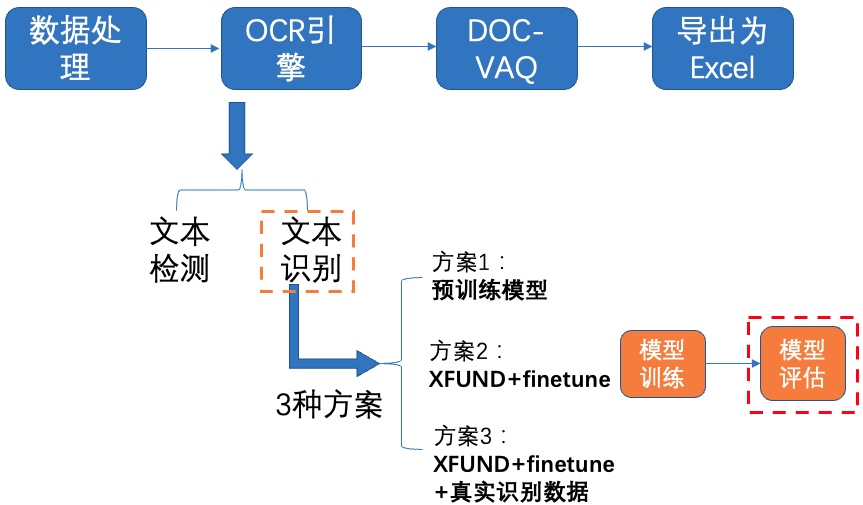
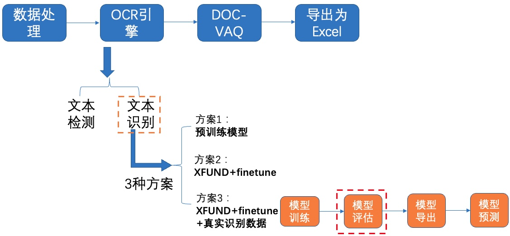

多模态表单识别
1 项目说明
计算机视觉在金融领域的应用覆盖文字识别、图像识别、视频识别等，其中文字识别（OCR）是金融领域中的核心AI能力，其应用覆盖客户服务、风险防控、运营管理等各项业务，针对的对象包括通用卡证票据识别（银行卡、身份证、营业执照等）、通用文本表格识别（印刷体、多语言、手写体等）以及一些金融特色票据凭证。通过因此如果能够在结构化信息提取时同时利用文字、页面布局等信息，便可增强不同版式下的泛化性。
表单识别旨在识别各种具有表格性质的证件、房产证、营业执照、个人信息表、发票等关键键值对(如姓名-张三)，其广泛应用于银行、证券、公司财务等领域，具有很高的商业价值。本次范例项目开源了全流程表单识别方案，能够在多个场景快速实现迁移能力。表单识别通常存在以下难点：
- 人工摘录工作效率低；
- 国内常见表单版式多；
- 传统技术方案泛化效果不满足。
表单识别包含两大阶段：OCR阶段和文档视觉问答阶段。
其中，OCR阶段选取了PaddleOCR的PP-OCRv2模型，主要由文本检测和文本识别两个模块组成。DOC-VQA文档视觉问答阶段基于PaddleNLP自然语言处理算法库实现的LayoutXLM模型，支持基于多模态方法的语义实体识别(Semantic Entity Recognition, SER)以及关系抽取(Relation Extraction, RE)任务。本案例流程如 图1 所示：

注：欢迎再AIStudio领取免费算力体验线上实训，项目链接: 多模态表单识别
2 安装说明
下载PaddleOCR源码，上述AIStudio项目中已经帮大家打包好的PaddleOCR(已经修改好配置文件)，无需下载解压即可，只需安装依赖环境~
| # 如仍需安装or安装更新，可以执行以下步骤
# git clone https://github.com/PaddlePaddle/PaddleOCR.git -b dygraph
# git clone https://gitee.com/PaddlePaddle/PaddleOCR
|
| # 安装依赖包
pip install -U pip
pip install -r /home/aistudio/PaddleOCR/requirements.txt
pip install paddleocr
pip install yacs gnureadline paddlenlp==2.2.1
pip install xlsxwriter
|
3 数据准备
这里使用XFUN数据集做为实验数据集。 XFUN数据集是微软提出的一个用于KIE任务的多语言数据集，共包含七个数据集，每个数据集包含149张训练集和50张验证集
分别为：ZH(中文)、JA(日语)、ES(西班牙)、FR(法语)、IT(意大利)、DE(德语)、PT(葡萄牙)
本次实验选取中文数据集作为我们的演示数据集。法语数据集作为实践课程的数据集，数据集样例图如 图2 所示。

3.1 下载处理好的数据集
处理好的XFUND中文数据集下载地址：https://paddleocr.bj.bcebos.com/dataset/XFUND.tar ,可以运行如下指令完成中文数据集下载和解压。

| wget https://paddleocr.bj.bcebos.com/dataset/XFUND.tar
tar -xf XFUND.tar
# XFUN其他数据集使用下面的代码进行转换
# 代码链接：https://github.com/PaddlePaddle/PaddleOCR/blob/release%2F2.4/ppstructure/vqa/helper/trans_xfun_data.py
# %cd PaddleOCR
# python3 ppstructure/vqa/tools/trans_xfun_data.py --ori_gt_path=path/to/json_path --output_path=path/to/save_path
# %cd ../
|
运行上述指令后在 /home/aistudio/PaddleOCR/ppstructure/vqa/XFUND 目录下有2个文件夹，目录结构如下所示：
| /home/aistudio/PaddleOCR/ppstructure/vqa/XFUND
└─ zh_train/ 训练集
├── image/ 图片存放文件夹
├── xfun_normalize_train.json 标注信息
└─ zh_val/ 验证集
├── image/ 图片存放文件夹
├── xfun_normalize_val.json 标注信息
|
该数据集的标注格式为
| {
"height": 3508, # 图像高度
"width": 2480, # 图像宽度
"ocr_info": [
{
"text": "邮政地址:", # 单个文本内容
"label": "question", # 文本所属类别
"bbox": [261, 802, 483, 859], # 单个文本框
"id": 54, # 文本索引
"linking": [[54, 60]], # 当前文本和其他文本的关系 [question, answer]
"words": []
},
{
"text": "湖南省怀化市市辖区",
"label": "answer",
"bbox": [487, 810, 862, 859],
"id": 60,
"linking": [[54, 60]],
"words": []
}
]
}
|
3.2 转换为PaddleOCR检测和识别格式
使用XFUND训练PaddleOCR检测和识别模型，需要将数据集格式改为训练需求的格式。

文本检测 标注文件格式如下，中间用'\t'分隔：
" 图像文件名 json.dumps编码的图像标注信息"
ch4_test_images/img_61.jpg [{"transcription": "MASA", "points": [[310, 104], [416, 141], [418, 216], [312, 179]]}, {...}]
json.dumps编码前的图像标注信息是包含多个字典的list，字典中的 points 表示文本框的四个点的坐标(x, y)，从左上角的点开始顺时针排列。 transcription 表示当前文本框的文字，当其内容为“###”时，表示该文本框无效，在训练时会跳过。
文本识别 标注文件的格式如下， txt文件中默认请将图片路径和图片标签用'\t'分割，如用其他方式分割将造成训练报错。
| " 图像文件名 图像标注信息 "
train_data/rec/train/word_001.jpg 简单可依赖
train_data/rec/train/word_002.jpg 用科技让复杂的世界更简单
...
|
| unzip -q /home/aistudio/data/data140302/XFUND_ori.zip -d /home/aistudio/data/data140302/
|
已经提供转换脚本，执行如下代码即可转换成功：
| %cd /home/aistudio/
python trans_xfund_data.py
|
4 OCR
选用飞桨OCR开发套件PaddleOCR中的PP-OCRv2模型进行文本检测和识别。PP-OCRv2在PP-OCR的基础上，进一步在5个方面重点优化，检测模型采用CML协同互学习知识蒸馏策略和CopyPaste数据增广策略；识别模型采用LCNet轻量级骨干网络、UDML 改进知识蒸馏策略和Enhanced CTC loss损失函数改进，进一步在推理速度和预测效果上取得明显提升。更多细节请参考PP-OCRv2技术报告。
4.1 文本检测
我们使用2种方案进行训练、评估：
- PP-OCRv2中英文超轻量检测预训练模型
- XFUND数据集+fine-tune
4.1.1 方案1：预训练模型
1）下载预训练模型

PaddleOCR已经提供了PP-OCR系列模型，部分模型展示如下表所示：
更多模型下载（包括多语言），可以参考PP-OCR 系列模型下载
这里我们使用PP-OCRv2中英文超轻量检测模型，下载并解压预训练模型：
| %cd /home/aistudio/PaddleOCR/pretrain/
wget https://paddleocr.bj.bcebos.com/PP-OCRv2/chinese/ch_PP-OCRv2_det_distill_train.tar
tar -xf ch_PP-OCRv2_det_distill_train.tar && rm -rf ch_PP-OCRv2_det_distill_train.tar
% cd ..
|
2）模型评估

接着使用下载的超轻量检测模型在XFUND验证集上进行评估，由于蒸馏需要包含多个网络，甚至多个Student网络，在计算指标的时候只需要计算一个Student网络的指标即可，key字段设置为Student则表示只计算Student网络的精度。
| Metric:
name: DistillationMetric
base_metric_name: DetMetric
main_indicator: hmean
key: "Student"
|
首先修改配置文件configs/det/ch_PP-OCRv2/ch_PP-OCRv2_det_distill.yml中的以下字段：
| Eval.dataset.data_dir：指向验证集图片存放目录
Eval.dataset.label_file_list：指向验证集标注文件
|
然后在XFUND验证集上进行评估，具体代码如下：
| %cd /home/aistudio/PaddleOCR
python tools/eval.py \
-c configs/det/ch_PP-OCRv2/ch_PP-OCRv2_det_distill.yml \
-o Global.checkpoints="./pretrain_models/ch_PP-OCRv2_det_distill_train/best_accuracy"
|
使用预训练模型进行评估，指标如下所示：
| 方案 |
hmeans |
| PP-OCRv2中英文超轻量检测预训练模型 |
77.26% |
使用文本检测预训练模型在XFUND验证集上评估，达到77%左右，充分说明ppocr提供的预训练模型具有泛化能力。
4.1.2 方案2：XFUND数据集+fine-tune
PaddleOCR提供的蒸馏预训练模型包含了多个模型的参数，我们提取Student模型的参数，在XFUND数据集上进行finetune，可以参考如下代码：
| import paddle
# 加载预训练模型
all_params = paddle.load("pretrain/ch_PP-OCRv2_det_distill_train/best_accuracy.pdparams")
# 查看权重参数的keys
# print(all_params.keys())
# 学生模型的权重提取
s_params = {key[len("student_model."):]: all_params[key] for key in all_params if "student_model." in key}
# 查看学生模型权重参数的keys
print(s_params.keys())
# 保存
paddle.save(s_params, "pretrain/ch_PP-OCRv2_det_distill_train/student.pdparams")
|
1)模型训练

修改配置文件configs/det/ch_PP-OCRv2_det_student.yml中的以下字段：
| Global.pretrained_model：指向预训练模型路径
Train.dataset.data_dir：指向训练集图片存放目录
Train.dataset.label_file_list：指向训练集标注文件
Eval.dataset.data_dir：指向验证集图片存放目录
Eval.dataset.label_file_list：指向验证集标注文件
Optimizer.lr.learning_rate：调整学习率，本实验设置为0.005
Train.dataset.transforms.EastRandomCropData.size：训练尺寸改为[1600, 1600]
Eval.dataset.transforms.DetResizeForTest：评估尺寸，添加如下参数
limit_side_len: 1600
limit_type: 'min'
|
执行下面命令启动训练：
| CUDA_VISIBLE_DEVICES=0 python tools/train.py \
-c configs/det/ch_PP-OCRv2/ch_PP-OCRv2_det_student.yml
|
2）模型评估

使用训练好的模型进行评估，更新模型路径Global.checkpoints。
将训练完成的模型放置在对应目录下即可完成模型评估
| %cd /home/aistudio/PaddleOCR/
python tools/eval.py \
-c configs/det/ch_PP-OCRv2/ch_PP-OCRv2_det_student.yml \
-o Global.checkpoints="pretrain/ch_db_mv3-student1600-finetune/best_accuracy"
|
同时我们提供了未finetuen的模型，配置文件参数(pretrained_model设置为空，learning_rate 设置为0.001)
| %cd /home/aistudio/PaddleOCR/
python tools/eval.py \
-c configs/det/ch_PP-OCRv2/ch_PP-OCRv2_det_student.yml \
-o Global.checkpoints="pretrain/ch_db_mv3-student1600/best_accuracy"
|
使用训练好的模型进行评估，指标如下所示：
| 方案 |
hmeans |
| XFUND数据集 |
79.27% |
| XFUND数据集+fine-tune |
85.24% |
对比仅使用XFUND数据集训练的模型，使用XFUND数据集+finetune训练，在验证集上评估达到85%左右，说明 finetune会提升垂类场景效果。
3）导出模型

在模型训练过程中保存的模型文件是包含前向预测和反向传播的过程，在实际的工业部署则不需要反向传播，因此需要将模型进行导成部署需要的模型格式。 执行下面命令，即可导出模型。
| # 加载配置文件`ch_PP-OCRv2_det_student.yml`，从`pretrain/ch_db_mv3-student1600-finetune`目录下加载`best_accuracy`模型
# inference模型保存在`./output/det_db_inference`目录下
%cd /home/aistudio/PaddleOCR/
python tools/export_model.py \
-c configs/det/ch_PP-OCRv2/ch_PP-OCRv2_det_student.yml \
-o Global.pretrained_model="pretrain/ch_db_mv3-student1600-finetune/best_accuracy" \
Global.save_inference_dir="./output/det_db_inference/"
|
转换成功后，在目录下有三个文件：
| /inference/rec_crnn/
├── inference.pdiparams # 识别inference模型的参数文件
├── inference.pdiparams.info # 识别inference模型的参数信息，可忽略
└── inference.pdmodel # 识别inference模型的program文件
|
4）模型预测

加载上面导出的模型，执行如下命令对验证集或测试集图片进行预测：
| det_model_dir：预测模型
image_dir：测试图片路径
use_gpu：是否使用GPU
|
检测可视化结果保存在/home/aistudio/inference_results/目录下，查看检测效果。
| %pwd
!python tools/infer/predict_det.py \
--det_algorithm="DB" \
--det_model_dir="./output/det_db_inference/" \
--image_dir="./doc/vqa/input/zh_val_21.jpg" \
--use_gpu=True
|
总结，我们分别使用PP-OCRv2中英文超轻量检测预训练模型、XFUND数据集+finetune2种方案进行评估、训练等，指标对比如下：
| 方案 |
hmeans |
结果分析 |
| PP-OCRv2中英文超轻量检测预训练模型 |
77.26% |
ppocr提供的预训练模型有泛化能力 |
| XFUND数据集 |
79.27% |
|
| XFUND数据集+finetune |
85.24% |
finetune会提升垂类场景效果 |
4.2 文本识别
我们分别使用如下3种方案进行训练、评估：
- PP-OCRv2中英文超轻量识别预训练模型
- XFUND数据集+fine-tune
- XFUND数据集+fine-tune+真实通用识别数据
4.2.1 方案1：预训练模型
1）下载预训练模型

我们使用PP-OCRv2中英文超轻量文本识别模型，下载并解压预训练模型：
| %cd /home/aistudio/PaddleOCR/pretrain/
wget https://paddleocr.bj.bcebos.com/PP-OCRv2/chinese/ch_PP-OCRv2_rec_train.tar
tar -xf ch_PP-OCRv2_rec_train.tar && rm -rf ch_PP-OCRv2_rec_train.tar
% cd ..
|
2）模型评估

首先修改配置文件configs/det/ch_PP-OCRv2/ch_PP-OCRv2_rec_distillation.yml中的以下字段：
| Eval.dataset.data_dir：指向验证集图片存放目录
Eval.dataset.label_file_list：指向验证集标注文件
|
我们使用下载的预训练模型进行评估：
| %cd /home/aistudio/PaddleOCR
CUDA_VISIBLE_DEVICES=0 python tools/eval.py \
-c configs/rec/ch_PP-OCRv2/ch_PP-OCRv2_rec_distillation.yml \
-o Global.checkpoints=./pretrain/ch_PP-OCRv2_rec_train/best_accuracy
|
使用预训练模型进行评估，指标如下所示：
| 方案 |
acc |
| PP-OCRv2中英文超轻量识别预训练模型 |
67.48% |
使用文本预训练模型在XFUND验证集上评估，acc达到67%左右，充分说明ppocr提供的预训练模型具有泛化能力。
4.2.2 方案2：XFUND数据集+finetune
同检测模型，我们提取Student模型的参数，在XFUND数据集上进行finetune，可以参考如下代码：
| import paddle
# 加载预训练模型
all_params = paddle.load("pretrain/ch_PP-OCRv2_rec_train/best_accuracy.pdparams")
# 查看权重参数的keys
print(all_params.keys())
# 学生模型的权重提取
s_params = {key[len("Student."):]: all_params[key] for key in all_params if "Student." in key}
# 查看学生模型权重参数的keys
print(s_params.keys())
# 保存
paddle.save(s_params, "pretrain/ch_PP-OCRv2_rec_train/student.pdparams")
|
1)模型训练
修改配置文件configs/rec/ch_PP-OCRv2/ch_PP-OCRv2_rec.yml中的以下字段：
| Global.pretrained_model：指向预训练模型路径
Global.character_dict_path: 字典路径
Optimizer.lr.values：学习率
Train.dataset.data_dir：指向训练集图片存放目录
Train.dataset.label_file_list：指向训练集标注文件
Eval.dataset.data_dir：指向验证集图片存放目录
Eval.dataset.label_file_list：指向验证集标注文件
|
执行如下命令启动训练：
| %cd /home/aistudio/PaddleOCR/
CUDA_VISIBLE_DEVICES=0 python tools/train.py \
-c configs/rec/ch_PP-OCRv2/ch_PP-OCRv2_rec.yml
|
2）模型评估

使用训练好的模型进行评估，更新模型路径Global.checkpoints，这里为大家提供训练好的模型./pretrain/rec_mobile_pp-OCRv2-student-finetune/best_accuracy
| %cd /home/aistudio/PaddleOCR/
CUDA_VISIBLE_DEVICES=0 python tools/eval.py \
-c configs/rec/ch_PP-OCRv2/ch_PP-OCRv2_rec.yml \
-o Global.checkpoints=./pretrain/rec_mobile_pp-OCRv2-student-finetune/best_accuracy
|
使用预训练模型进行评估，指标如下所示：
| 方案 |
acc |
| XFUND数据集+finetune |
72.33% |
使用XFUND数据集+finetune训练，在验证集上评估达到72%左右，说明 finetune会提升垂类场景效果。
4.2.3 方案3：XFUND数据集+finetune+真实通用识别数据
接着我们在上述XFUND数据集+finetune实验的基础上，添加真实通用识别数据，进一步提升识别效果。首先准备真实通用识别数据，并上传到AIStudio：
1)模型训练

在上述XFUND数据集+finetune实验中修改配置文件configs/rec/ch_PP-OCRv2/ch_PP-OCRv2_rec.yml的基础上，继续修改以下字段：
| Train.dataset.label_file_list：指向真实识别训练集图片存放目录
Train.dataset.ratio_list：动态采样
|
执行如下命令启动训练：
| %cd /home/aistudio/PaddleOCR/
CUDA_VISIBLE_DEVICES=0 python tools/train.py \
-c configs/rec/ch_PP-OCRv2/ch_PP-OCRv2_rec.yml
|
2）模型评估

使用训练好的模型进行评估，更新模型路径Global.checkpoints。
| CUDA_VISIBLE_DEVICES=0 python tools/eval.py \
-c configs/rec/ch_PP-OCRv2/ch_PP-OCRv2_rec.yml \
-o Global.checkpoints=./pretrain/rec_mobile_pp-OCRv2-student-realdata/best_accuracy
|
使用预训练模型进行评估，指标如下所示：
| 方案 |
acc |
| XFUND数据集+fine-tune+真实通用识别数据 |
85.29% |
使用XFUND数据集+finetune训练，在验证集上评估达到85%左右，说明真实通用识别数据对于性能提升很有帮助。
3)导出模型

导出模型只保留前向预测的过程：
| !python tools/export_model.py \
-c configs/rec/ch_PP-OCRv2/ch_PP-OCRv2_rec.yml \
-o Global.pretrained_model=pretrain/rec_mobile_pp-OCRv2-student-realdata/best_accuracy \
Global.save_inference_dir=./output/rec_crnn_inference/
|
4)模型预测

加载上面导出的模型，执行如下命令对验证集或测试集图片进行预测，检测可视化结果保存在/home/aistudio/inference_results/目录下，查看检测、识别效果。需要通过--rec_char_dict_path指定使用的字典路径
| python tools/infer/predict_system.py \
--image_dir="./doc/vqa/input/zh_val_21.jpg" \
--det_model_dir="./output/det_db_inference/" \
--rec_model_dir="./output/rec_crnn_inference/" \
--rec_image_shape="3, 32, 320" \
--rec_char_dict_path="/home/aistudio/XFUND/word_dict.txt"
|
总结，我们分别使用PP-OCRv2中英文超轻量检测预训练模型、XFUND数据集+finetune2种方案进行评估、训练等，指标对比如下：
| 方案 |
acc |
结果分析 |
| PP-OCRv2中英文超轻量识别预训练模型 |
67.48% |
ppocr提供的预训练模型具有泛化能力 |
| XFUND数据集+fine-tune |
72.33% |
finetune会提升垂类场景效果 |
| XFUND数据集+fine-tune+真实通用识别数据 |
85.29% |
真实通用识别数据对于性能提升很有帮助 |
5 文档视觉问答(DOC-VQA)
VQA指视觉问答，主要针对图像内容进行提问和回答,DOC-VQA是VQA任务中的一种，DOC-VQA主要针对文本图像的文字内容提出问题。
PaddleOCR中DOC-VQA系列算法基于PaddleNLP自然语言处理算法库实现LayoutXLM论文，支持基于多模态方法的 语义实体识别 (Semantic Entity Recognition, SER) 以及 关系抽取 (Relation Extraction, RE) 任务。
如果希望直接体验预测过程，可以下载我们提供的预训练模型，跳过训练过程，直接预测即可。
| %cd pretrain
#下载SER模型
wget https://paddleocr.bj.bcebos.com/pplayout/ser_LayoutXLM_xfun_zh.tar && tar -xvf ser_LayoutXLM_xfun_zh.tar
#下载RE模型
wget https://paddleocr.bj.bcebos.com/pplayout/re_LayoutXLM_xfun_zh.tar && tar -xvf re_LayoutXLM_xfun_zh.tar
%cd ../
|
5.1 SER
SER: 语义实体识别 (Semantic Entity Recognition）, 可以完成对图像中的文本识别与分类。

图19 中不同颜色的框表示不同的类别，对于XFUND数据集，有QUESTION, ANSWER, HEADER 3种类别
- 深紫色：HEADER
- 浅紫色：QUESTION
- 军绿色：ANSWER
在OCR检测框的左上方也标出了对应的类别和OCR识别结果。
5.1.1 模型训练

启动训练之前，需要修改配置文件 configs/vqa/ser/layoutxlm.yml 以下四个字段：
| Train.dataset.data_dir：指向训练集图片存放目录
Train.dataset.label_file_list：指向训练集标注文件
Eval.dataset.data_dir：指指向验证集图片存放目录
Eval.dataset.label_file_list：指向验证集标注文件
|
| %cd /home/aistudio/PaddleOCR/
CUDA_VISIBLE_DEVICES=0 python tools/train.py -c configs/vqa/ser/layoutxlm.yml
|
最终会打印出precision, recall, hmean等指标。 在./output/ser_layoutxlm/文件夹中会保存训练日志，最优的模型和最新epoch的模型。
5.1.2 模型评估

我们使用下载的预训练模型进行评估，如果使用自己训练好的模型进行评估，将待评估的模型所在文件夹路径赋值给 Architecture.Backbone.checkpoints 字段即可。
| CUDA_VISIBLE_DEVICES=0 python tools/eval.py \
-c configs/vqa/ser/layoutxlm.yml \
-o Architecture.Backbone.checkpoints=pretrain/ser_LayoutXLM_xfun_zh/
|
最终会打印出precision, recall, hmean等指标，预训练模型评估指标如下：

5.1.3 模型预测

使用如下命令即可完成OCR引擎 + SER的串联预测, 以SER预训练模型为例:
| CUDA_VISIBLE_DEVICES=0 python tools/infer_vqa_token_ser.py \
-c configs/vqa/ser/layoutxlm.yml \
-o Architecture.Backbone.checkpoints=pretrain/ser_LayoutXLM_xfun_zh/ \
Global.infer_img=doc/vqa/input/zh_val_42.jpg
|
最终会在config.Global.save_res_path字段所配置的目录下保存预测结果可视化图像以及预测结果文本文件，预测结果文本文件名为infer_results.txt。通过如下命令查看预测图片：
| import cv2
from matplotlib import pyplot as plt
# 在notebook中使用matplotlib.pyplot绘图时，需要添加该命令进行显示
%matplotlib inline
img = cv2.imread('output/ser/zh_val_42_ser.jpg')
plt.figure(figsize=(48,24))
plt.imshow(img)
|
5.2 RE
基于 RE 任务，可以完成对图象中的文本内容的关系提取，如判断问题对(pair)。

图中红色框表示问题，蓝色框表示答案，问题和答案之间使用绿色线连接。在OCR检测框的左上方也标出了对应的类别和OCR识别结果。
5.2.1 模型训练

启动训练之前，需要修改配置文件configs/vqa/re/layoutxlm.yml中的以下四个字段
| Train.dataset.data_dir：指向训练集图片存放目录
Train.dataset.label_file_list：指向训练集标注文件
Eval.dataset.data_dir：指指向验证集图片存放目录
Eval.dataset.label_file_list：指向验证集标注文件
|
| CUDA_VISIBLE_DEVICES=0 python3 tools/train.py -c configs/vqa/re/layoutxlm.yml
|
最终会打印出precision, recall, hmean等指标。 在./output/re_layoutxlm/文件夹中会保存训练日志，最优的模型和最新epoch的模型
5.2.2 模型评估

我们使用下载的预训练模型进行评估，如果使用自己训练好的模型进行评估，将待评估的模型所在文件夹路径赋值给 Architecture.Backbone.checkpoints 字段即可。
| CUDA_VISIBLE_DEVICES=0 python3 tools/eval.py \
-c configs/vqa/re/layoutxlm.yml \
-o Architecture.Backbone.checkpoints=pretrain/re_LayoutXLM_xfun_zh/
|
最终会打印出precision, recall, hmean等指标，预训练模型评估指标如下：

5.2.3 模型预测

使用如下命令即可完成OCR引擎 + SER + RE的串联预测, 以预训练SER和RE模型为例，
最终会在config.Global.save_res_path字段所配置的目录下保存预测结果可视化图像以及预测结果文本文件，预测结果文本文件名为infer_results.txt。
| cd /home/aistudio/PaddleOCR
CUDA_VISIBLE_DEVICES=0 python3 tools/infer_vqa_token_ser_re.py \
-c configs/vqa/re/layoutxlm.yml \
-o Architecture.Backbone.checkpoints=pretrain/re_LayoutXLM_xfun_zh/ \
Global.infer_img=test_imgs/ \
-c_ser configs/vqa/ser/layoutxlm.yml \
-o_ser Architecture.Backbone.checkpoints=pretrain/ser_LayoutXLM_xfun_zh/
|
最终会在config.Global.save_res_path字段所配置的目录下保存预测结果可视化图像以及预测结果文本文件，预测结果文本文件名为infer_results.txt, 每一行表示一张图片的结果，每张图片的结果如下所示，前面表示测试图片路径，后面为测试结果：key字段及对应的value字段。
| test_imgs/t131.jpg {"政治面税": "群众", "性别": "男", "籍贯": "河北省邯郸市", "婚姻状况": "亏末婚口已婚口已娇", "通讯地址": "邯郸市阳光苑7号楼003", "民族": "汉族", "毕业院校": "河南工业大学", "户口性质": "口农村城镇", "户口地址": "河北省邯郸市", "联系电话": "13288888888", "健康状况": "健康", "姓名": "小六", "好高cm": "180", "出生年月": "1996年8月9日", "文化程度": "本科", "身份证号码": "458933777777777777"}
|
展示预测结果
| import cv2
from matplotlib import pyplot as plt
%matplotlib inline
img = cv2.imread('./output/re/t131_ser.jpg')
plt.figure(figsize=(48,24))
plt.imshow(img)
|
6 导出Excel

为了输出信息匹配对，我们修改tools/infer_vqa_token_ser_re.py文件中的line 194-197。
| fout.write(img_path + "\t" + json.dumps(
{
"ser_result": result,
}, ensure_ascii=False) + "\n")
|
更改为
| result_key = {}
for ocr_info_head, ocr_info_tail in result:
result_key[ocr_info_head['text']] = ocr_info_tail['text']
fout.write(img_path + "\t" + json.dumps(
result_key, ensure_ascii=False) + "\n")
|
同时将输出结果导出到Excel中，效果如 图28 所示：

| import json
import xlsxwriter as xw
workbook = xw.Workbook('output/re/infer_results.xlsx')
format1 = workbook.add_format({
'align': 'center',
'valign': 'vcenter',
'text_wrap': True,
})
worksheet1 = workbook.add_worksheet('sheet1')
worksheet1.activate()
title = ['姓名', '性别', '民族', '文化程度', '身份证号码', '联系电话', '通讯地址']
worksheet1.write_row('A1', title)
i = 2
with open('output/re/infer_results.txt', 'r', encoding='utf-8') as fin:
lines = fin.readlines()
for line in lines:
img_path, result = line.strip().split('\t')
result_key = json.loads(result)
# 写入Excel
row_data = [result_key['姓名'], result_key['性别'], result_key['民族'], result_key['文化程度'], result_key['身份证号码'],
result_key['联系电话'], result_key['通讯地址']]
row = 'A' + str(i)
worksheet1.write_row(row, row_data, format1)
i+=1
workbook.close()
|
更多资源
参考链接